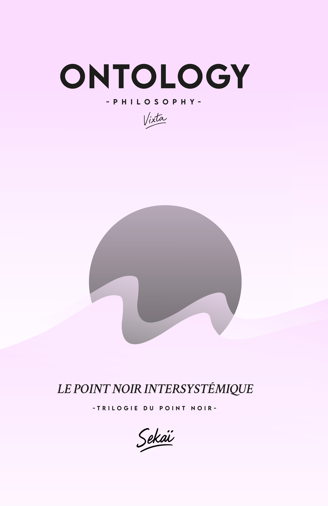
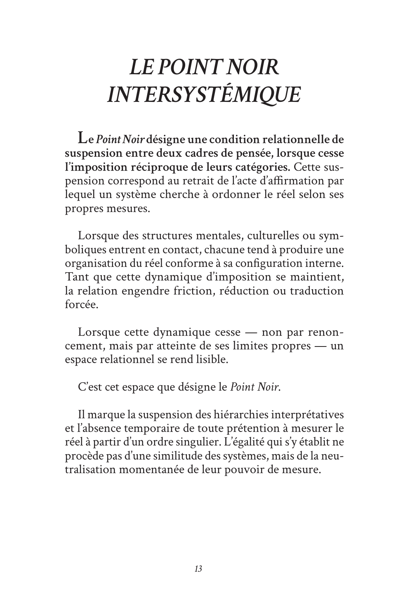

01 / 03
Ce que le livre observe
Le moment où deux cadres de pensée cessent de s’imposer leurs propres catégories, tandis que leur différence et leur relation demeurent toutes deux lisibles.
TRILOGIE DU POINT NOIR · VOLUME I
Un essai ontologique bref sur la coexistence de cohérences distinctes, sans fusion, réduction ni vérité commune.

LE POINT DE DÉPART
Et pourtant, quelque chose tient.
Deux pensées se rencontrent sans jamais se confondre. Le livre observe la condition minimale à partir de laquelle leur relation devient lisible sans que l’une absorbe l’autre.
LE LIVRE
Le texte avance d’un seul mouvement, sans chapitres, par reprises et déplacements. Il ne cherche ni à convaincre ni à conclure.
01 / 03
Le moment où deux cadres de pensée cessent de s’imposer leurs propres catégories, tandis que leur différence et leur relation demeurent toutes deux lisibles.
02 / 03
88 pages continues. Une lecture lente, dense, autonome et sans prérequis philosophique.
03 / 03
Ni méthode, ni doctrine, ni protocole de dialogue, ni sagesse du silence.

EXTRAIT · P. 13ÉPROUVER LA VOIX
« Le Point Noir désigne une condition relationnelle de suspension entre deux cadres de pensée. » — Le livre, p. 13
L’extrait réunit les pages 13 à 19 du mouvement principal. Il permet d’éprouver directement le rythme, la densité et la langue du livre avant l’achat.
Ouvrir l’extrait PDFPDF · 9 pages · aucune adresse demandée
LES QUESTIONS MAL POSÉES
Chaque question ouvre une situation sans la convertir en méthode ni en promesse de résolution.
CONTRAT DE LECTURE
Aucun parcours universitaire n’est requis. Le livre s’adresse en revanche à une attention disponible pour la lenteur, les reprises et les distinctions précises.
Altérité, opacité, coexistence, traduction et limites du consensus.
Systèmes, cadres hétérogènes, épistémologie et passage entre régimes.
Un objet relié bref, autonome, conçu pour la lecture lente et la relecture.
CE QUE CE N’EST PAS
Il décrit une configuration relationnelle. Il ne fournit ni étapes, ni règles de conduite, ni bénéfice garanti.
FRAGMENTS
Trois phrases réelles, sans reformulation promotionnelle.
P. 15« Le silence propre au Point Noir n’est pas un vide, mais un intervalle relationnel. »
P. 16« Le contact qui se tient dans le champ du Point Noir ne relève pas d’un échange communicatif. »
P. 18« Le Point Noir ne formule aucune vérité commune. »
L’OBJET RELIÉ
Les configurations du dialogue
Un mouvement continu de 88 pages, autonome au sein de la Trilogie du Point Noir. Vixta est le nom d’auteur ; le travail s’inscrit dans le développement du système Sekaï.
AVANT DE COMMENCER
Des réponses courtes pour savoir ce que le livre demande — et ce qu’il ne demande pas.
Non. Le livre décrit un régime relationnel ; il ne fournit ni étapes, ni règles, ni résultat à atteindre.
Non. Aucun prérequis n’est demandé, mais le texte est dense et gagne à être lu lentement.
Non. Le silence et l’opacité n’y désignent ni état intérieur, ni expérience sacrée.
Oui. Il appartient à une trilogie, mais ce premier volume constitue une lecture autonome.
Il progresse par modulations d’un même régime plutôt que par chapitres ou démonstration cumulative.
À l’étude et à la stabilisation des termes après ou autour de la lecture. Ils ne remplacent pas le livre.
LE POINT NOIR INTERSYSTÉMIQUE